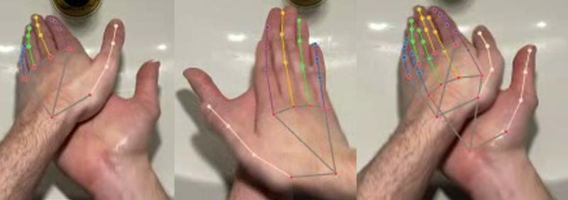

SHORT BIO
Greetings! I’m Bernardo Lanza, a creative technologist with a robust foundation in both science and technology. I hold a Bachelor's degree in Industrial Engineering and a Master's in Robotic Engineering. Currently, I'm pursuing a Ph.D. in Mechanical Engineering, where my research focuses on integrating AI and vision systems for monitoring plant health. My work is a fusion of robotics and nature, transforming orchards into high-tech environments. My passion for innovation goes beyond the lab—I love turning ideas into tangible projects, testing and refining them through hands-on experimentation. I’m deeply engaged in research, with publications in artificial intelligence and measurement science. Outside of my professional realm, I’m passionate about history, culture, sustainable development, and DIY IoT projects. Volunteering is also close to my heart, particularly in initiatives aimed at cultural and community preservation. I’m committed to empowering young minds and guiding them toward shaping their own futures in society. With a strong blend of creativity and practical skills, I excel at bringing concepts to life and collaborating on pioneering projects. Let’s connect and create the future together!
CAREER
Apr 2024 - Aug 2024
PH.D INTERNATIONAL RESEARCH PERIOD
ETSEA - Universitat de Lleida - Spain
Jul 2023 - Jan 2024
Developer - Ph.D Industrial Stage
Prospecto S.r.l
Apr 2021 - Feb 2022
RESEARCH FELLOWSHIP
Laboratorio di Misure Meccaniche e Termiche - Università degli studi di Brescia
CERTIFICATIONS
Nov 11th, 2016
PH.D IN ROBOTICS
Optical-based measurement for plant health monitoring and yield estimation.
Laboratorio di Misure Meccaniche e Termiche - Università degli studi di Brescia
July 26-30, 2021
DeepLearn Summer School 2021
| IRDTA certificate | 38 hours
Oct 20th, 2020
M.SC. IN MECHATRONIC ENGINEERING, ELECTRONICS AND ROBOTICS
Robotics Measurements Laboratory, University of Trento, Italy
Sept 29th, 2009
B.SC. IN INDUSTRIAL ENGINEERING
Robotics Measurement Laboratory, University of Trento, Italy
RESEARCH
Gesture recognition for Healthcare 4.0
Gesture recognition for Healthcare 4.0: a machine learning approach to reduce clinical infection risks. In collaboration with Idea-Re S.r.l., we spearheaded the creation of a vision-based system to detect hands and recognize gestures for monitoring surgical handwashing procedures, which play a vital role in infection control. We also deployed machine learning algorithms to analyze the data collected by the system.
Skills: Machine learning, Python, Biomechanics, Deep Learning
Vision system for body and gym gesture recognition
In collaboration with ABHorizon, this project involves developing a vision-based pose estimator for human body and gym gesture recognition.
Skills: OpenCV, Statistics, TCP/IP, Python, Deep Learning


Vision embedded system for crop and weed recognition
In collaboration with Ferrari Costruzioni Meccaniche, we're developing a vision-based embedded system, utilizing deep neural networks, for crop and weed recognition.
Skills: Embedded Linux, Python, Computer Vision, Engineering, Research & Development


Mobile Multi-Sensor Embedded System for 3D Orchard Reconstruction
The project focuses on integrating low-cost RGB-D cameras with GNSS and IMU data using SLAM to create accurate 3D reconstructions of an apple orchard. This method aims to provide a cost-effective alternative to high-end sensors, addressing challenges in real-world environmental conditions. The approach was validated by comparing it to high-performance scanning systems, evaluating the geometrical parameters of the trees, and assessing the sensors' performance under practical conditions.
.png)


DIY PROJECT
-
Smart Home System Multi-Utility
- Github Repo :
HOME MANAGEMENT:
The "Smart Home System Multi-Utility" is an advanced IoT solution designed to manage various aspects of home automation and security, all controlled remotely through a Telegram bot hosted on a Raspberry Pi. The system allows for the remote control of the home’s automatic gate via electrical relays connected to the Raspberry Pi. Additionally, it continuously monitors temperature and humidity, providing real-time data to ensure a comfortable and secure living environment. Access to the system is secured with a password, guaranteeing the highest level of protection.
FINANCIAL BOT:
In addition to home management, this project incorporates a sophisticated financial bot that offers cryptocurrency portfolio analysis. The bot performs daily web scraping to collect data on promising new cryptocurrencies and tracks the portfolio's progress day by day. It provides detailed statistical analyses and generates charts for both global stocks and the user’s specific portfolio.
AUTOMATIC UPDATE SYSTEM:
The Raspberry Pi can be rebooted remotely via the Telegram bot. Upon reboot, it automatically updates the software by pulling the latest changes from GitHub and then relaunches the system, ensuring it always runs the most current version. This process allows for seamless global updates from anywhere, independent of the bot's daily tasks. - Proj2: Description.
TEACHING
-
Assistente alla didattica. Dipartimento di Ingegneria Meccanica e Industriale
- Theory: Lecture: “Probabilistic Sensor Fusion: From Naïve Bayes to Kalman Filter" Lab. of Mechanical and Thermal Measurements, 2023.
- Lab: Progettazione percorsi formativi, Matlab, Predictive Maintenance, Statistics, Modal analysis, Metrology, Sensors for Autonomous navigation, Coaching e mentoring, Computer Vision, Python
ING-INF/07 Sistemi di Visione per la Meccatronica. (2022-2024)
ING-IND/12 Robotica e Misure - Laboratorio di Misure Industriali. (2021-2024)
Publications to do
- STEWIE: eSTimating grapE berries number and radius from images using a Weakly supervIsed nEural network
- Gesture recognition for Healthcare 4.0: a machine learning approach to reduce clinical infection risks
Contact
Email: bernardo.lanza.tech@gmail.com
LinkedIn: linkedin.com/in/bernardo-lanza-554064163
Publications: orcid.org/0009-0005-3561-754X